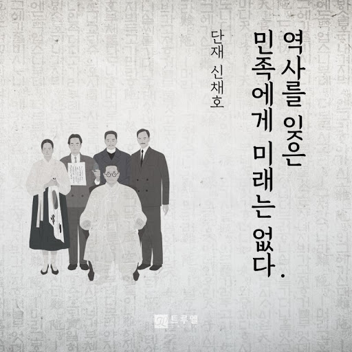

우리나라가 일본제국주의에 의해 식민통치를 당한 35년간의 시대
일제강점기 35년은 지배 정책에 따라 제1기 : 무단통치시기(1910∼1919), 제2기 : 문화정치시기(1919∼1931), 제3기 : 병참기지화 및 전시동원시기(1931∼1945)의 3시기로 구분된다.
- 제1기 : 무단통치시기(1910∼1919) 1910년 8월 22일, 대한제국의 총리 대신이면서 우리나라 대표적 친일파인 이완용과 초대 총독이었던 데라우치 마사타케 사이의 한일 합병 조약이 체결이 되었고, 8월 29일 공포되어 대한제국은 국권을 상실하게 되었다. 경복궁 근정전 앞에 일장기가 휘날리며 본격적인 일본의 식민지배가 시작되었다. 일제는 독립운동을 억압하기 위해 무단통치를 시작하였다. 이를 위해 먼저 식민지 통치의 최고 기구인 조선총독부를 설치하였다. 이 총독부를 중심으로 1910년부터 1945년까지 우리나라를 강압적으로 지배하였다. 일제는 치안을 확보한다는 구실로 전국 곳곳에 경찰관서와 헌병 기관을 설치하고 헌병이 경찰 업무를 지휘하며 총, 칼과 함께 무력을 행사하였다.
- 제2기 : 문화정치시기(1919∼1931) 1910년대의 ‘무단통치’와 대비해 ‘당근과 채찍’을 병행한 1920~30년대의 통치방식을 ‘문화정치’라 부른다. 무력에 기초한 식민지배정책이라는 점에서 문화통치와 무단통치는 본질상 다르지 않다. 그러나 군이 치안을 직접 담당하던 헌병경찰체제에서 문관인 보통경찰이 치안을 전담한 보통경찰체제의 성립, 민족운동을 분열시켜 체제 내로 흡수하기 위한 민족분열정책과 조선인 대우 및 지방제도 개선 등 부분적인 양보 정책(=개량 정책)을 추진했다는 면에서 현상적인 차이를 보이고 있다.
- 제3기 : 병참기지화 및 전시동원시기(1931∼1945) 일제가 한반도를 침략 전쟁 수행에 필요한 인적⋅물적 자원을 조달하는 병참 기지로 만들기 위해 실시한 일련의 정책이다. 1929년 세계 대공황의 영향으로 서구 자본주의 국가들은 블록 경제를 강화했다. 이에 따라 일본은 상품 수출에 큰 타격을 받았다. 이 과정에서 식민지 조선을 종래의 식량 공급지⋅상품 판매 시장으로서뿐만 아니라 과잉 일본 자본의 투자처이자 전쟁 수행을 위해 군수 물자를 생산하는 병참 기지로서 재조정해 갔다.
그리고 1945년 8월 15일 우리나라가 일제의 식민통치로부터 벗어나 자주독립을 되찾게 된다.
우리는 역사를 왜 알아야 할까?
<왜 우리는 역사에 빠져드는가>, 이수광역사를 알아야 하는 이유는 수 없이 많지만, 우리는 위선자들을 가려내고 그들이 했던 잘못을 지금도 하는 사람들을 심판해야 하기 때문이다. 아직도 거리를 활개 치고 다니는 친일파를 척결하고, 사회의 썩은 부분인 위선자들을 가려내야 비로소 더 나은 미래를 기대할 수 있다.
같은 실수를 반복하지 않기 위해서는 과거를 알고 현재를 알아야 한다. 역사를 알면 같은 실수를 반복하지 않는 일도 생기겠지만, 역사를 모른다면 수 없이 많은 실수를 반복할 것이다.

<관련사진1>